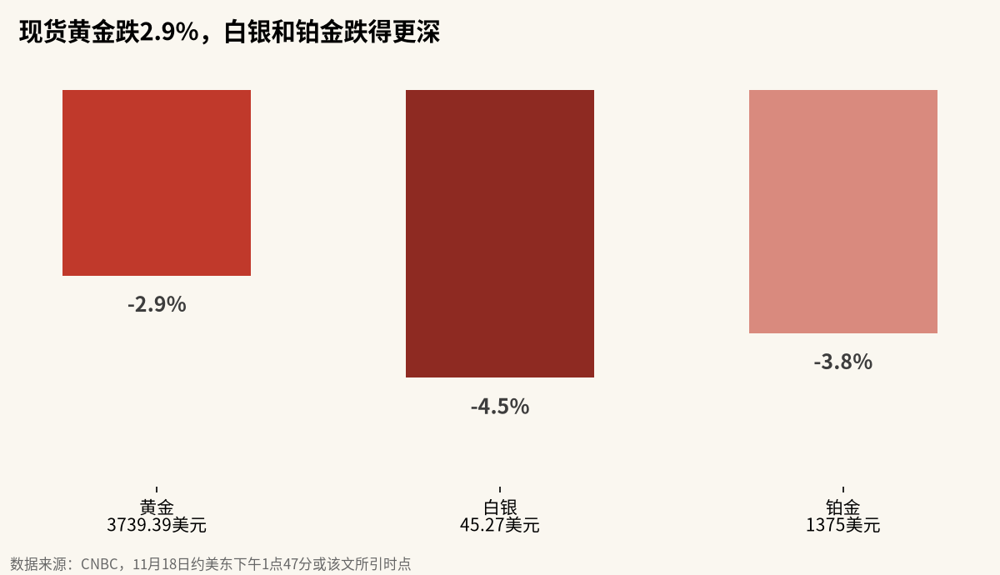
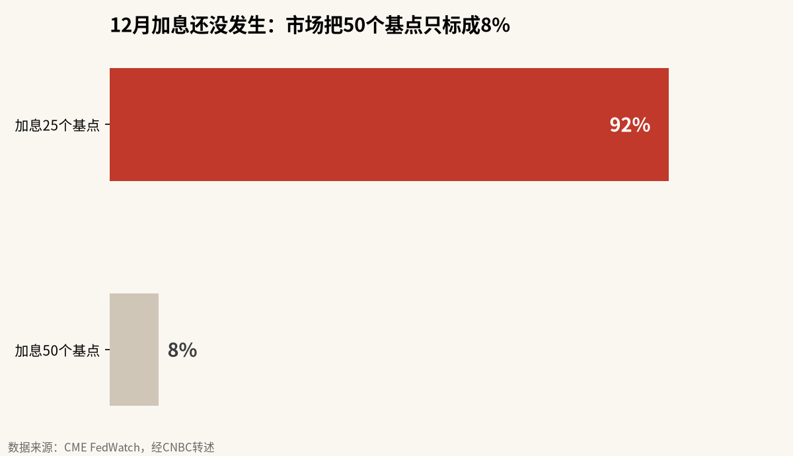

人们把黄金当成避风港，它却先跌了：沃勒说要「吓人们一跳」，金价落到 14 个月低点
美联储理事沃勒在 CNBC 上说，通胀正往错误的方向走，可能需要在 12 月加息 50 个基点来「吓人们一跳」；现货黄金一度跌到 3734.76 美元，是 2025 年 9 月 26 日以来最低。
黄金被很多人当成避风港。一听到让人害怕的消息，按老习惯，钱会先往黄金里躲。
11月18日不是这个剧本。美联储理事克里斯托弗·沃勒在CNBC《Squawk Box》节目里对史蒂夫·莱斯曼说，他对通胀「非常、非常担心」，通胀正往错误的方向走，而且在扩散。他说，如果真想把通胀压下来，就得采取更积极的行动，「你可能需要吓人们一跳。」他认为，12月8日到9日的会议大概需要加息50个基点。
现货黄金在美东下午1点47分跌2.9%，到3739.39美元一盎司；盘中最低3734.76美元，是2025年9月26日以来最低，也就是大约14个月低点。12月黄金期货跌3.2%，到3741.80美元。美元指数升至19个月新高。
金价这次跌，主因是市场在给「更长时间更高利率」重新定价。单看某一句吓唬人的话，还下不了「衰退已经到了」的结论。
先把几个词说清楚
现货黄金，是立刻交割的黄金价格，通常被用来报「金价」。黄金期货是约定在未来某个月交割的合约，价格会跟现货接近，但不必完全一样。
基点，是利率的小单位，1个基点等于0.01个百分点。加息25个基点，就是把政策利率提高0.25个百分点；50个基点是0.50个百分点。
保险式降息，是为防经济变差而提前下调利率的做法。后来如果通胀没有下来，这些降息就可能被加回去。
CME FedWatch，是根据期货价格估算美联储下次会议加息或不加息的概率。它反映的是市场押注，不是已经发生的加息。
美元指数，衡量美元相对一篮子货币的强弱。美元变强时，用美元计价的黄金，对其他货币持有者来说更贵，价格往往更难往上走。
黄金、白银、铂金同一天的跌幅对照

是只有黄金在跌吗？不是。白银跌到45.27美元，盘中也创下2025年9月26日以来最低。铂金跌到1375美元，年内已跌33%。钯金跌1.7%，到954.25美元。避风港这一天没有托住贵金属，白银和铂金跌得比黄金还深。
我第一次读到「吓人们一跳」时，下意识去对了一下时间：金价是不是只在这句之后才掉的。CNBC把金价下跌和坚挺的美元、美国利率前景放在一起写，沃勒的话是其中一条，不是唯一一条。前一天，威廉姆斯和穆萨莱姆已经释放过还需进一步加息的信号。
沃勒到底说了什么
沃勒的原话很硬。他先说对通胀「非常、非常担心」，「它有点正往错误的方向走，而且在扩散。」接着说，如果真想把它压下来，「你就得开始采取更积极的行动。」「你可能需要吓人们一跳。」
对12月会议，他的看法是大概需要加息50个基点；或者先加25个基点，并明确示意1月还会再动。可这与主席凯文·沃什不愿做这种前瞻指引的偏好相冲突。沃勒说，如果不打算向市场清楚示意1月要动，他的看法就是12月必须走50个基点。
他还说，首先要收回去年三次各25个基点的「保险式」降息；如果2025年夏天的政策利率都没把通胀压下来，只是回到那个水平也不会让通胀回落，所以可能需要在三次加息之上再多做一些。三次各25个基点是75个基点；再多做一些，就可能到100个基点以上。X上「可能需要加息1%或更多」就是从这里转出来的。这是对沃勒原意的归纳，不是他的原话。
10月27日至28日的会议纪要，在美东11月18日下午2点公布，对应北京时间19日凌晨3点。纪要写明，几乎所有官员认为继续加息可能合适；少数官员提出，若通胀数据令人失望，下次会议可考虑大于25个基点。这和沃勒把50个基点当作自己基准情形之一，方向上是同一边，力度并不相同。
算一笔账：10万美元的黄金，这一天大约亏多少
下面这个仓位是示意，不是某个人的真实持仓。我没去编一个更高的入场价，价格就用CNBC在美东下午1点47分的现货价。
第一步，按3739.39美元一盎司算，10万美元大约能买26.74盎司。算法是100000除以3739.39。
第二步，这一天现货黄金跌了2.9%。10万美元的仓位大约亏2900美元。
第三步，如果看盘中最低的3734.76美元，比3739.39美元还要再低一点，但CNBC给出的当日跌幅是按3739.39美元报的2.9%。我不在这两个报价上较劲，正文用2.9%这一档。
第四步，把市场的概率和沃勒的立场放在一起。CNBC转述的CME FedWatch显示，12月加息25个基点的概率是92%，加息50个基点是8%。市场把50个基点当成小概率；沃勒却把50个基点当成他的基准情形之一。这是解释，不是新的加息决定。
第五步，如果有人按老习惯，一听到「吓人们一跳」就觉得该买黄金避险，这一天的账正好反着来。同样担心利率会更高的人，也可能先卖掉黄金、买进美元。
市场给12月加息路径标的概率

市场有没有把50个基点当成基准情形？没有。这张图画的是路径概率，不是已经落地的加息。92%说明市场的基准情形仍是加25个基点。沃勒要的那一档，还只被标成8%。
希夫的判断，要两句话一起看
彼得·希夫把黄金下跌解释成：市场认为美联储已承诺打赢通胀。他写过，如果黄金交易员是对的，美联储就是在打一场沃尔克时代以来最大的通胀仗；若真如此，股票、债券和房地产市场会崩盘——「所以他们是错的。」
他随后又写，若美联储真把通胀打下去，股票、债券、房地产和加密货币的跌幅会比黄金更大。另一条里他说，沃勒提到可能需要以50个基点「吓人们一跳」之后，黄金继续下跌；即便加50个基点，利率仍太低，不足以抑制通胀。
这两头要并列看。前一句是在说交易员可能看错了；后一句是在说，若政策真的那么硬，黄金最终会比股票撑得更好。这都是他的观点，不是已经发生的行情。
还有交易员观察到：开盘十几分钟，英伟达跌掉了财报带来的涨幅；黄金、原油、美股、虚拟货币都在跌，只有美债收益率和美元指数在涨。这是个人盘面观察。贵金属的具体跌幅，仍以CNBC的数字为准。
归结起来，是利率预期在重新定价
归结起来，金价这次先跌，是市场在给更长时间更高利率重新定价。避风港的位置没有消失，只是被利率预期压了一下。
主要风险有两边。若12月只加25个基点，随后通胀数据回落，美元升势放缓，金价可能把这一天的跌幅收回去。若会议真的走出50个基点，或之后的通胀数据继续往错误的方向走，贵金属还可能继续受压。
能改这个判断的信号，是12月8日到9日的会议到底走25还是50个基点，以及美元指数和通胀数据会不会顺着沃勒担心的方向再走一步。
这对持有黄金的人意味着什么
黄金不会仅仅因为有人害怕，就自动往上走。 这一天先动的是利率预期和美元，金价被带着往下走。
如果手里有黄金，先按自己的持仓算一遍跌2.9%是多少钱。上面那笔10万美元的示意账，大约是2900美元，不能当成你的真实盈亏。
还要分清两档加息路径。市场目前把50个基点标成8%的小概率，沃勒把它当成自己的基准情形之一。两者还没有对齐。白银和铂金这一天跌得比黄金更深，如果持有的是一篮子贵金属，回撤可能比金价那一行更大。
几点说明
10万美元、26.74盎司和大约2900美元的亏损都是示意仓位，按CNBC美东下午1点47分的现货价3739.39美元和跌幅2.9%计算，不是某笔真实交易。26.74由100000除以3739.39得到。FedWatch的92%和8%经CNBC转述，图画的是尚未发生的加息路径。会议纪要要点已对照官方纪要和主流报道，与X上的转述一致。彼得·希夫和盘面观察都是个人观点。「加息1%或更多」不是沃勒原话，是对「收回三次25个基点并可能再多做一些」的归纳。
免责声明：本文内容仅供信息分享，金价与概率数据来自公开市场报道转述，不构成任何投资建议。
X 上怎么看
结论 · 沃勒关于12月50个基点的表述，有记者转述原话，相对清楚。黄金「14个月低点」有人写在时间线上，但具体盘中价和「蒸发」万亿，不能只凭Kalshi或Ted的一条。希夫的看法是：即便加50个基点，政策仍偏松，长期反而利好黄金。
▲ 看多1 位
▼ 看空4 位
观点为 X 用户当日公开帖子的中文摘要，忠于原文但有删减；标「未核实」的为预测、个人推测或单一来源说法。立场为人工判断。
数据来源
- 沃勒的原话和12月加息路径，来自他11月18日接受CNBC《Squawk Box》史蒂夫·莱斯曼采访的报道。X上「可能需要加息1%或更多」是对「收回三次25个基点并可能再多做一些」的转述，不是沃勒原话。
- 现货黄金、盘中最低、12月黄金期货、美元指数、白银、铂金、钯金，以及CME FedWatch的12月加息概率（25个基点92%、50个基点8%），来自CNBC同一天的金价报道，时点约美东下午1点47分或该文所引报价。
- 威廉姆斯、穆萨莱姆11月17日已释放还需进一步加息的信号，亦见该金价报道。
- 10月27日至28日会议纪要于美东11月18日下午2点公布。正文只用了两条已核对的要点：几乎所有官员认为继续加息可能合适；少数官员提出，若通胀数据令人失望，下次会议可考虑大于25个基点。这两点先见于X账号amitisinvesting的转述，后与美联储官方纪要和CNBC报道对照一致。未把纪要里的其他数字写进正文。
- 彼得·希夫的三条判断和TraderS18的盘面观察，都是个人观点，不是行情数据。贵金属具体跌幅以CNBC为准。
- 10万美元示意仓位、约26.74盎司和大约2900美元亏损，是按3739.39美元和2.9%跌幅做的算术，不是某笔真实交易。
- https://www.cnbc.com/2026/11/18/federal-reserve-governor-christopher-waller.html
- https://www.cnbc.com/2026/11/18/gold-slides-to-over-one-year-low-on-firm-dollar-us-rate-outlook.html
- https://www.cnbc.com/2026/11/18/fed-minutes-october-2026.html
- https://www.federalreserve.gov/monetarypolicy/files/fomcminutes20261028.pdf
- https://x.com/StockMKTNewz/status/2123063051389739488
- https://x.com/amitisinvesting/status/2123130787767955748
- https://x.com/PeterSchiff/status/2123075375953752316
- https://x.com/PeterSchiff/status/2123099934220058739
- https://x.com/PeterSchiff/status/2123048650524033497
- https://x.com/TraderS18/status/2123067098620653823